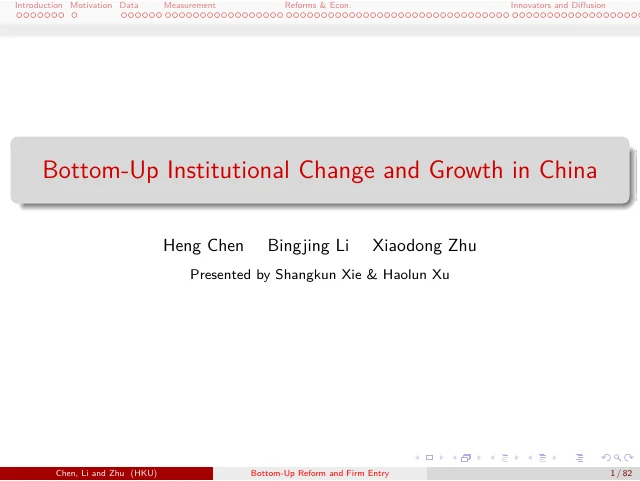
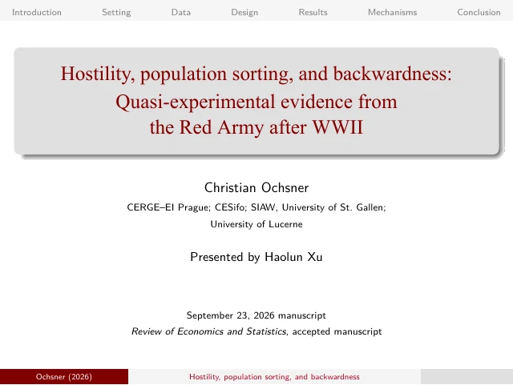
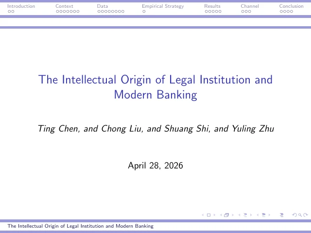
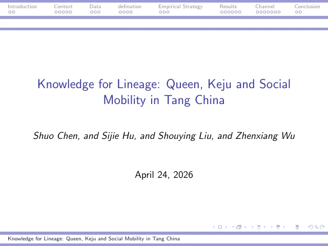

Institutions & Development
Bottom-Up Institutional Change and Growth in China
Paper authorsHeng Chen, Bingjing Li, Xiaodong Zhu
Slides byShangkun Xie & Haolun Xu

Shared resources
Slides from my paper presentations, shared as a public resource for study and discussion.
Institutions & Development
Paper authorsHeng Chen, Bingjing Li, Xiaodong Zhu
Slides byShangkun Xie & Haolun Xu

Conflict & Migration
Paper authorsChristian Ochsner
Slides byHaolun Xu

Law & Finance
Paper authorsTing Chen, Chong Liu, Shuang Shi, Yuling Zhu
Slides byHaolun Xu

Education & Social Mobility
Paper authorsShuo Chen, Sijie Hu, Shouying Liu, Zhenxiang Wu
Slides byHaolun Xu

If you use these slides, please credit the original paper authors and the slide presenters. Corrections and suggestions are welcome by email.